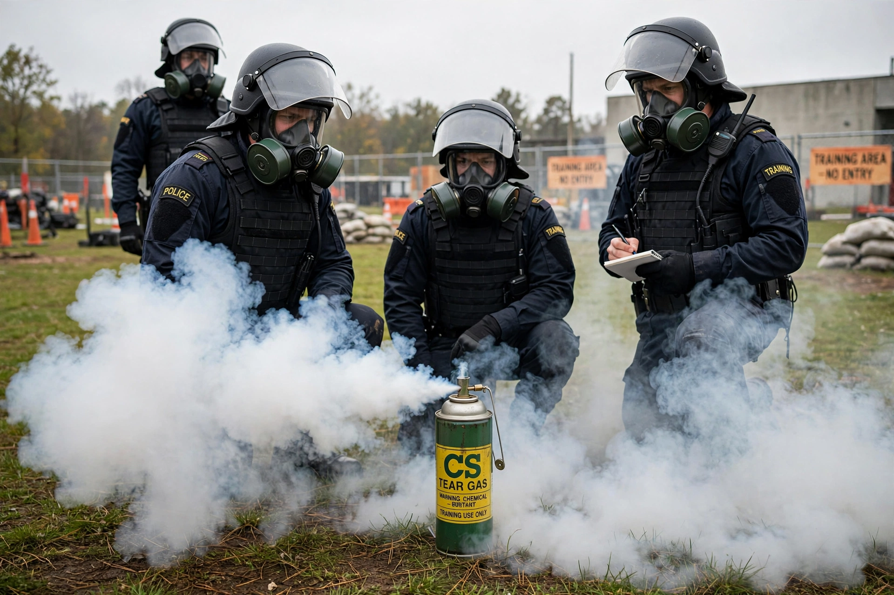

CS gas is the common name for 2-chlorobenzalmalononitrile (o-chlorobenzylidene malononitrile), a cyanocarbon used as a tear gas and riot control agent. Though called a gas, it is a solid dispersed as an aerosol. The name comes from its discoverers, Ben Corson and Roger Stoughton (1928).

CS activates TRPA1 pain receptors, causing intense burning of eyes, nose, throat and skin, tearing, coughing and disorientation. Effects usually subside within minutes in fresh air, though high doses in enclosed spaces can cause serious respiratory injury and chemical burns.
Adopted by many police and military forces from the 1950s–60s as a less lethal replacement for CN gas, CS is delivered in grenades, sprays and projectiles. The Chemical Weapons Convention bans its use as a method of warfare while permitting law-enforcement use, a distinction that remains controversial. See Tear gas and Pepper spray.